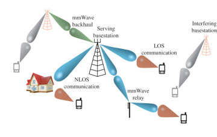

|
Project Work
 |
Inter-prediction in Point Cloud Compression with Sparse Convolutional Networks
Internship work at Qualcomm.
Deep learning solution for inter-frame compression of high resolution point clouds.
Proposed I, B, and P-frame encoding framework.
|
 |
PU-Dense: Sparse Tensor-based Point Cloud Geometry Upsampling (Project Page) (GitHub)
Internship work at Qualcomm.
A sparse convolution-based point cloud upsampling solution that works on synthetic mesh-based dataset, sparse LiDAR-based point clouds, as well as dense high-resolution photo-realistic point clouds.
The current state-of-the-art in point cloud upsampling.
|
 |
Dynamic Point Cloud Interpolation. (pdf)
Internship work at Qualcomm.
Deep learning-based point cloud interpolation framework for photorealistic dynamic point clouds.
Given two consecutive dynamic point cloud frames, the framework aims to generate intermediate frame(s) between them.
|
 |
Video-based Point Cloud Compression (V-PCC) Artifact Removal. (pdf)
Summer Internship work at Tencent.
Video-based Point Cloud Compression (V-PCC) standards introduces quantization at lower bitrate resulting in artifacts in the reconstructed point cloud.
We propose a deep learning-based V-PCC artifact removal framework.
We exploit the prior knowledge of the direction of quantization noise in V-PCC to learn both the direction as well as level of quantization noise by limiting the degree of freedom of the learned noise.
|
 |
Point Cloud Geometry Prediction Across Spatial Scale. (pdf)
Summer Internship work at Tencent.
We propose a deep learning solution for point cloud geometry prediction scheme to upsample a lower Level-of-Detail (LoD) point cloud into a higher LoD point cloud.
We employ an octree-type upsampling solution to predict geometry across spatial scale.
|
 |
2D Penoptic Segmentation on street level imagery (SLI) from HERE True Drives.
Summer Internship at HERE Technologies.
2D Building Facade Segmentation and Portal Detection.
2D Building Tracking, Segmentation, and Instant Segmentation.
|
 |
Point Cloud Denoising.
Point clouds obtained from 3D scanners or by image-based reconstruction techniques are often corrupted with a significant amount of non-negligible noise.
We propose a two-stage deep neural network that takes in 3D point cloud data and outputs a denoised point cloud.
1st stage: Outlier removal.
2nd stage: Denoising surface noise.
We achieve state-of-the-art point cloud denoising results.
(Noisy point cloud on the left, Denoised point cloud on the right. JPEG 8i dataset)
|
 |
3D Semantic Segmentation on HERE True LiDAR Data.
Summer Internship at HERE Technologies.
Annotation of large scale outdoor LiDAR point cloud data.
Building Deep Learning Architecture for 3D Semantic Segmentation.
Feature abstraction from segmented 3D Point Cloud Data.
(Image on the left is from Semantic3D Dataset.)
|
 |
Realtime 3D Point Cloud Communication.
Joint source-channel coding for robustness to different channel conditions. (pdf)
Adaptive Modulation and Coding schemes for point cloud broadcasting.
Adaptive Random Network Coding (ARNC) for scalable point cloud multicasting. (pdf)
Low latency support for V2V as well as V2I communication
(Outdoor LiDAR data from Hesai shown on the left.)
|
 |
Mobile Edge Point Cloud Computing.
(Google car collecting LiDAR data shown on the left.)
|
 |
Non-Deep Learning-based 3D Point Cloud Geometry Compression.
Binary Tree embedded Quad Tree (BTQT) source encoding. (pdf) & (pdf)
Lossless point cloud geometry compression.
Error Resilient and Scalable point cloud source coding that is layered for different quality of service requirements.
|
 |
Deep Learning (Older Work)
Deep Super Resolution Networks for SIFT point repeatability.
Human Activity Recognition using Wearable Sensors by Deep Convolutional Neural Networks.
Market Trend Prediction for Cryptocurrency using Machine Learning.
Machine learning applications in Wireless Communication and Network Science.
|
 |
5G and Beyond.
Resource allocation schemes for 5G heterogenous multi-numerology network. (pdf)
Flexible waveform and numerology design for future cellular systems.
Adaptive CP size optimization in OFDM waveform.
|
|
 |
Directional mmWave Communication.
Directional MAC Protocol for IEEE 802.11ad WLANs. (pdf) (PROJECT LINK)
Efficient Network Level Beamforming Training for IEEE 802.11ad WLANs. (pdf)
Energy Efficient MAC Protocol with Localization scheme for Wireless Sensor Networks using Directional Antennas. (pdf draft)
Multi-hop network neighbor discovery and beamforming using directional antennas in 802.11ad WLANs. (pdf draft)
Optimization of link scheduling in directional wireless networks using Heuristic methods. (pdf draft)
|
|